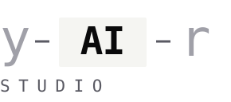

cutting spec rework 80% across two engineering teams.
A 9-month rollout of an agentic feature lifecycle at Lognet Systems. Two teams, seven developers, one cloud + one legacy stack. The result: shipped faster, with fewer regressions, and a team that runs the pipeline without me.
the situation
Two engineering teams, separately managed, with diverging quality. Cloud was fast but flaky; legacy was stable but slow. Both spent half their time clarifying requirements after development started.
Spec-related rework hovered at 50% of total dev time. AI tooling was being adopted ad-hoc — some devs used Copilot, some used Claude, no shared review standard. PRs slipped through review. CI/CD existed but wasn't enforced as a quality gate. Production incidents spiked twice that quarter.
what we changed
1. no spec, no code
We made it a written rule: no development starts without a validated spec. Specs needed acceptance criteria, edge cases, and a verification plan — all reviewed before estimation.
2. AI-assisted dev, on rails
Standardised on Claude Code + GitHub Copilot for both teams, with shared prompt templates and a review checklist for AI-generated PRs. Devs got 25% throughput back, but only because the gates around the AI work were tightened in lockstep.
3. ci/cd as a quality gate
Pipelines went from "advisory" to "fail-fast." Tests, linting, type checks, and deploy verification all blocked merge. Cut prod incidents 40% in the first quarter after rollout.
4. scrum + jira transparency
Epics → tasks visible to the client weekly. Plan-vs-actual tracked in dashboards both teams owned. Predictability moved from "hope" to "70% within plan."
┌─ before ──────────────────┐ ┌─ after ───────────────────┐ │ spec rework 50% │ ─▶ │ spec rework 10% │ │ throughput baseline│ ─▶ │ throughput +25% │ │ bugs to qa baseline│ ─▶ │ bugs to qa −25% │ │ prod incidents spiking │ ─▶ │ prod incidents −40% │ └────────────────────────────┘ └────────────────────────────┘
results
The "no spec, no code" policy felt heavy at first. Six weeks in we couldn't imagine working without it. — team lead, cloud infrastructure
what's next
- Roll the same harness to the third (recently formed) team in q2 2026.
- Extend verification gates to cover prompt regression, not just code regression.
- Publish the internal playbook so other Lognet projects can self-onboard.